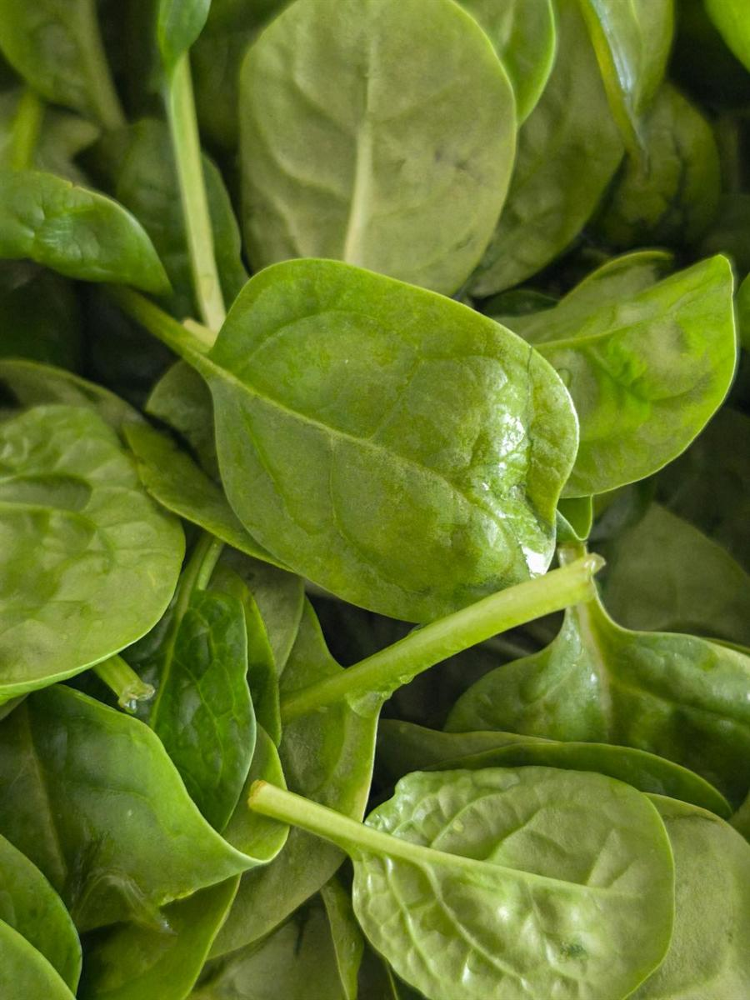

菠菜
快速答案
菠菜提供叶黄素、玉米黄质、硝酸盐和叶酸，是人们常用的高营养密度绿叶菜之一。它的类胡萝卜素、黄酮类化合物和矿物质组合，让它成为抗炎饮食方式中很实用的日常蔬菜，尤其适合想要一种生吃熟吃都能用的绿叶菜。
菠菜是什么，以及它如何加入抗炎饮食
菠菜（Spinacia oleracea）是苋科绿叶蔬菜，起源于古代波斯。它有新鲜菠菜、嫩菠菜、成熟叶片、冷冻切碎菠菜、冷冻叶片和罐装等形式。嫩菠菜味道更温和，口感也更柔软。
菠菜在世界各地都被使用，例如印度 palak paneer、中东 fatayer、希腊 spanakopita、日本 gomaae，以及西式沙拉和奶昔。菠菜加热后体积会明显缩小，约减少 90%，这也是它很适合抗炎烹调的原因：它可以融入汤、鸡蛋、豆类和谷物菜里，而不会让餐食显得沉重或复杂。
为什么菠菜可能支持抗炎饮食
菠菜含有叶黄素和玉米黄质，这两种类胡萝卜素会在视网膜中积累，也因抗氧化作用而被研究。菠菜还提供糖甘油脂类化合物，可能有助于保护消化道内壁。菠菜中的硝酸盐会在体内转化为一氧化氮，支持血管功能。
菠菜富含叶酸，这是一种参与 DNA 甲基化和同型半胱氨酸代谢的 B 族维生素。较高的同型半胱氨酸与炎症标志物和心血管风险增加有关。充足叶酸摄入有助于维持正常同型半胱氨酸水平。
为什么菠菜是最容易持续使用的绿叶菜之一
菠菜通常比更硬挺的绿叶菜更容易重复使用，因为它对烹调者要求较少。嫩菠菜可以直接放进沙拉或奶昔，成熟菠菜则能很快融入汤、意面、鸡蛋、豆类和谷物碗里。这种灵活性让它在日常生活中很有优势。
它也让人可以在生食和熟食之间切换，而不需要完全换一种食材。一袋菠菜可以覆盖早餐、午餐和晚餐，让健康饮食更连贯，而不是更复杂。
关键营养和化合物
100 克生菠菜大约提供 28 毫克维生素 C、194 微克叶酸、558 微克 β-胡萝卜素、12.2 毫克叶黄素和玉米黄质、2.9 克蛋白质、79 毫克镁和 2.7 毫克铁。熟菠菜营养更浓缩，100 克熟菠菜大约提供生菠菜 3 倍左右的营养密度。
潜在健康好处
- 叶黄素和玉米黄质含量很高，有助于眼部和抗氧化支持。
- 富含叶酸，支持同型半胱氨酸调节和 DNA 健康。
- 含有硝酸盐，支持一氧化氮生成和血管功能。
- 作为蔬菜，提供有意义的铁和镁。
- 加热后体积明显缩小，更容易把更多绿叶菜放进一餐。
如何使用菠菜
- 把几把嫩菠菜加入奶昔，它很容易和水果一起打匀。
- 在汤、炖菜和咖喱快结束前 2 分钟加入菠菜。
- 用菠菜做沙拉底，搭配橄榄油、柠檬、坚果和种子。
- 用大蒜和橄榄油快炒 2 到 3 分钟，作为简单配菜。
- 加入煎蛋卷、烘蛋和炒蛋中。
- 和罗勒、松子、帕玛森奶酪一起打成青酱。
生菠菜还是熟菠菜？
两者都有意义，大多数人同时吃两种最好。生菠菜保留更多维生素 C 和叶酸，而熟菠菜让一些类胡萝卜素和矿物质更容易吸收。更好的选择往往不是理论上哪种最好，而是你真正愿意持续吃哪种。
如果你不喜欢大份生沙拉，也没关系。菠菜放进汤、鸡蛋、咖喱、豆类或意面里，仍然能很好发挥作用。
如何选购和保存菠菜
为了方便，可以买预洗嫩菠菜；如果主要用于烹调，也可以买成束成熟菠菜。冷冻菠菜营养也相近，对汤、意面、鸡蛋和其他熟菜来说通常更经济。新鲜菠菜冷藏保存，尽量在 5 到 7 天内用完，因为它很快会变蔫。
FAQ
菠菜是好的抗炎蔬菜吗？
菠菜可以是很强的抗炎蔬菜，因为它以容易加入规律餐食的形式提供叶黄素、玉米黄质、叶酸和硝酸盐。它最大的优势是有很多不同方式可以持续使用。
生菠菜还是熟菠菜更有营养？
两者都有优势。烹调会破坏细胞壁，提高 β-胡萝卜素、叶黄素和铁的生物利用度；生菠菜则保留更多维生素 C 和叶酸。两种吃法轮换使用，营养会更丰富。
菠菜草酸太高吗？
菠菜草酸含量较高，但这并不意味着它对大多数人都是问题食物。烹调并沥干可以减少草酸含量，许多人也更适合把菠菜和其他绿叶菜轮换，而不是每天只依赖菠菜。
吃更多菠菜最简单的方法是什么？
最简单的方法通常是把菠菜放进你已经会做的餐食里，例如鸡蛋、汤、意面、谷物碗、奶昔和快炒菜。它不一定要从一大盘沙拉开始。
菠菜真的能提高铁水平吗？
菠菜提供非血红素铁，它的生物利用度低于动物来源的血红素铁。把菠菜和柠檬汁、番茄等富含维生素 C 的食物搭配，可以改善铁吸收。
证据说明
菠菜营养素在心血管健康、眼部健康以及膳食硝酸盐研究中被广泛研究，包括 AREDS 中关于叶黄素和玉米黄质的研究。流行病学数据也持续显示，更高绿叶菜摄入与较低炎症标志物和慢性病风险相关。
本页将菠菜作为抗炎饮食中可以辅助搭配的一种食物来介绍，而不是把它作为单独的治疗方法。